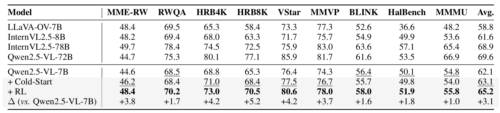
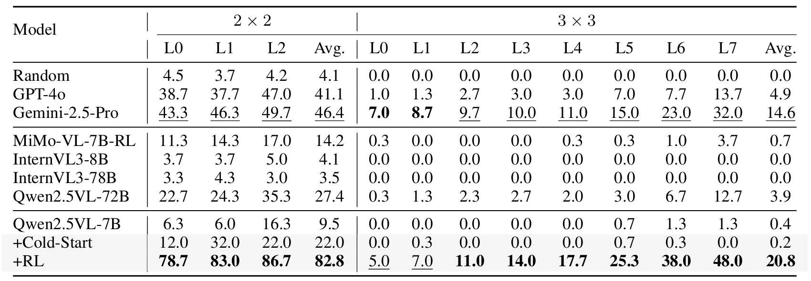

Agentic Jigsaw Interaction Learning for Enhancing
Visual Perception and Reasoning in Vision-Language Models
Abstract
Although current large Vision-Language Models (VLMs) have advanced in multimodal understanding and reasoning, their fundamental perceptual and reasoning abilities remain limited. Specifically, even on simple jigsaw tasks, existing VLMs perform near randomly, revealing deficiencies in core perception and reasoning capabilities. While high-quality vision-language data can enhance these capabilities, its scarcity and limited scalability impose significant constraints. To address this, we propose AGILE, an Agentic jiGsaw Interaction Learning for Enhancing visual perception and reasoning in VLMs. AGILE formulates jigsaw solving as an interactive process, enabling the model to progressively engage with the environment. At each step, the model generates executable code to perform an action based on the current state, while the environment provides fine-grained visual feedback to guide task completion. Through this iterative cycle of observation and interaction, the model incrementally improves its perceptual and reasoning capabilities via exploration and feedback. Experimental results show that AGILE not only substantially boosts performance on jigsaw tasks of varying complexity (e.g., increasing accuracy from 9.5% to 82.8% under the 2 × 2 setting) but also demonstrates strong generalization across 9 general vision tasks, achieving an average improvement of 3.1%. These results indicate notable enhancements in both perceptual and reasoning abilities. This work opens a new avenue for advancing reasoning and generalization in multimodal models and provides an efficient, scalable solution to the scarcity of multimodal reinforcement learning data.
Experiment
On average, AGILE surpasses the base model Qwen2.5-VL-7B by 3.1% across all 9 benchmarks, providing compelling evidence that jigsaw-based training effectively enhances the model’s ability to capture visual relations and strengthen reasoning skills, thereby improving its performance on general vision downstream tasks.
After supervised fine-tuning and reinforcement learning, Qwen2.5-VL-7B achieves substantial improvements on the jigsaw task, significantly surpassing Gemini2.5-Pro and Qwen2.5-VL-72B. These results demonstrate that modeling jigsaw solving as an interactive multi-turn dialogue effectively enhances visual perception and reasoning.
We showcase several jigsaw-solving behaviors, including interpreting individual pieces, validating edge alignment through cropping and zooming, and reasoning about semantic consistency. These human-like strategies highlight the emergence of advanced perceptual and reasoning capabilities.

Citation
TODO